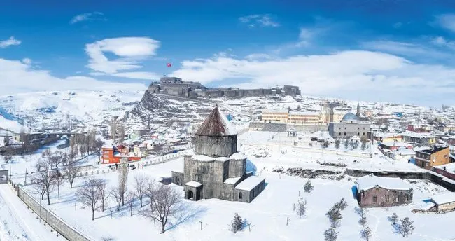

Kars Hakkında
Kars, tarihi dokusu ve doğal güzellikleriyle Doğu Anadolu Bölgesi'nde yer alan bir şehirdir. Ani Harabeleri, Çıldır Gölü ve Sarıkamış gibi mekanlarıyla dikkat çeker.
Gezilecek Yerler
- Ani Harabeleri
- Çıldır Gölü
- Sarıkamış Kayak Merkezi
- Kars Kalesi
- Fethiye Camii
Turlar
Kars'ta yapabileceğiniz aktiviteler ve turlar:
- Ani Harabeleri Turu
- Çıldır Gölü Turu
- Sarıkamış Kayak Merkezi Turu
- Kültür Turları
Fiyat Bilgisi
Kars'ta sunulan tur hizmetlerinin ortalama fiyatları:
- Ani Harabeleri Turu: 500 TL
- Çıldır Gölü Turu: 400 TL
- Sarıkamış Kayak Merkezi Turu: 600 TL
- Kültür Turları: 450 TL